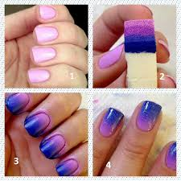
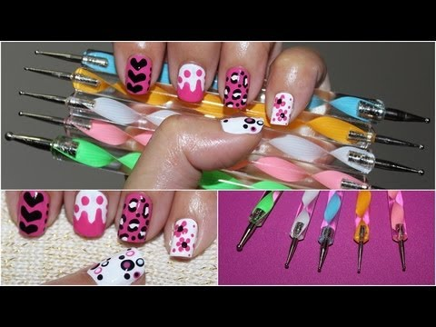
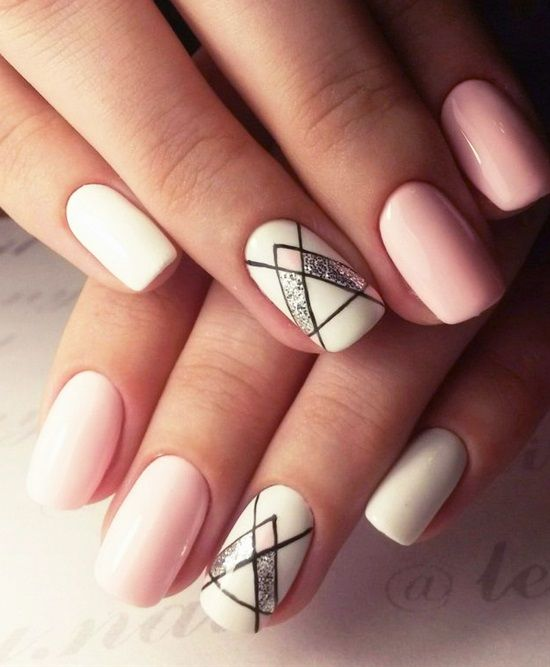
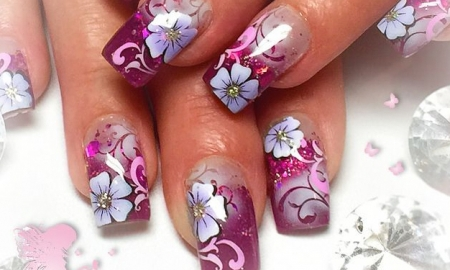

.jpg)
| Home | Contact us | About us | Services | Work done by our technicians | Nail Art |
Nail art is a creative way to paint, decorate, enhance the nails. Nail art is a fun way to express yourself. There are many different styles of nail art.
A simple technique for creating colourful blended nail designs. This requires a piece of sponge (foundation blending sponges work the best) and lacqure nail polishes to create awesome gradiant nails.

A technique using a dotter tool to create different patterns. The dotter comes in a variety of sizes so you choose the one that will best help you create your design.

Water Marbleing is a technique that can take a lot of practice. it requires a peel off base coat, a small glass bowl, different nail polish's, and a toothpick. This design is done by dripping nail polish in a bowl of water and making a pattern with the tooth pick. The base coat is applied to the skin of the finger and a regular base coat is used for the nail. The nail is then dipped into the swirrled nail polish it then creates a beautiful marble effect on the nail.
.jpg)
This method of design is mostly on the easy side if you have a steady hand and an artistic eye. Stripers is basically nail polish with a thin brush that is used to create designs on the nail. The designs mostly consist of lines but a lot more can be created

nail vinyals are stickers/ stencils used to create a design. They are applied to the nails and nail polish is painted over them. The nail vinyal is then removed.

Airbrush is a very fun technique a stencil is applied to the nail and an airbrush tool is used to apply color onto the nails.

Stamping is a very simple technique that creates beautiful art. You can choose a stamp that is already created for you or you can create your own using a differnent stamping tooo
.jpg)